The chidb File Format¶
This section describes the format of a chidb database file. We assume a basic knowledge of RDBMS (a student should know what a table and an index is) and what a B-Tree is. This documentation does not explain how the B-Tree operations must be performed, just how the B-Tree is stored using a specific file format.
This section presents the file format in a top-down fashion. We will start by presenting a high-level overview of the file, where certain details will seem handwavy. However, throughout the section, all these details will become increasingly clear. By the end of this section, the file format will be specified in enough detail for you to implement B-Tree operations on chidb files.
File format overview¶
The chidb file format is a subset of the SQLite file format and, thus, shares many common traits with it. A chidb file can store any number of tables, physically stored as a B-Tree, and a table can have records with any number of fields of different datatypes. Indexes are also supported, and also stored as B-Trees. However, chidb makes the following simplifying assumptions:
Each table must have an explicit primary key (SQLite allows tables without primary keys to be created), and the primary key must be a single unsigned 4 byte integer field.
Indexes can only be created for unsigned 4-byte integer unique fields.
Only a subset of the SQLite datatypes are supported.
The size of a record cannot exceed the size of a database page (more specifically, SQLite overflow pages are not supported). This effectively also limits the size of certain datatypes (such as strings).
The current format is geared towards using the database file only for insertion and querying. Although record removal and update are not explicitly disallowed, their implementation cannot be done efficiently in the current format.
A user is assumed to have exclusive access to the database file.
These assumptions were made to simplify the implementation of many low-level details, so that students can focus on higher-level ideas (but still requiring a healthy amount of low-level programming). For example, although supporting database records that span multiple pages is a necessary feature in production databases, its implementation requires a fair amount of low-level programming that is algorithmically dull (at least when compared with algorithms for B-Tree insertion, query optimization, etc.).
Figure Physical and logical file organization summarizes the file organization, and the relationship between logical and physical organization.
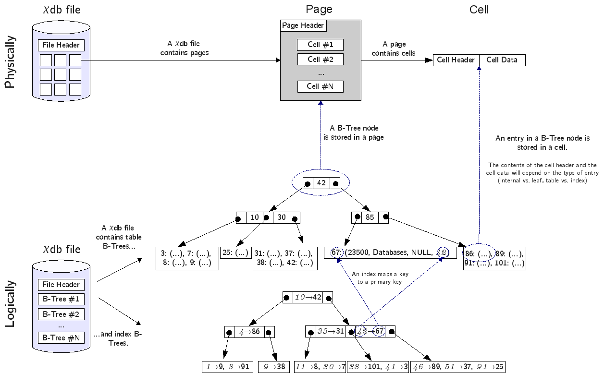
Physical and logical file organization¶
Logical organization¶
A chidb file contains the following:
A file header.
0 or more tables.
0 or more indexes.
The file header contains metadata about the database file, most of which is relevant to the physical organization of the file. The file header does not contain the database schema (i.e., the specification of tables and indexes in the database), which is stored in a special table called the schema table (described in The schema table).
Each table in the database file is stored as a B+-Tree (we will refer to these simply as table B-Trees). The entries of this tree are database records (a collection of values corresponding to a row in the table). The key for each entry will be its primary key. Since a table is a B+-Tree, the internal nodes do not contain entries but, rather, are used to navigate the tree.
Each index in the database file is stored as a B-Tree (we will refer to these as index B-Trees). Assuming we have a relation \(R(pk,\ldots,ik,\ldots)\) where \(pk\) is the primary key, and \(ik\) is the attribute we want to create an index over, each entry in an index B-Tree will be a \((k_1, k_2)\) pair, where \(k_1\) is a value of \(ik\) and \(k_2\) is the value of the primary key (\(pk\)) in the record where \(ik=k_1\). More formally, using relational algebra:
The entries are ordered (and thus keyed) by the value of \(k_1\). Note that an index B-Tree contains as many entries as the table it indexes. Furthermore, since it is a B-Tree (as opposed to a B+-Tree), both the internal and leaf nodes contain entries (the internal nodes, additionally, include pointers to child nodes).
Physical organization¶
A chidb file is divided into pages of size \(PageSize\), numbered from 1. Each page is used to store a table or index B-Tree node. Pages are sometimes referred to as ’blocks’ in the literature. They are the units of transfer between secondary storage and memory.
A page contains a page header with metadata about the page, such as the type of page (e.g., does it store an internal table node? a leaf index node?). The space not used by the header is available to store cells, which are used to store B-Tree entries:
Leaf Table cell: \(\langle Key, DBRecord \rangle\), where \(DBRecord\) is a database record and \(Key\) is its primary key.
Internal Table cell: \(\langle Key, ChildPage \rangle\), where \(ChildPage\) is the number of the page containing the entries with keys less than or equal to \(Key\).
Leaf Index cell: \(\langle KeyIdx, KeyPk \rangle\), where \(KeyIdx\) and \(KeyPk\) are \(k_1\) and \(k_2\), respectively, as defined earlier.
Internal Index cell: \(\langle KeyIdx, KeyPk, ChildPage \rangle\), where \(KeyIdx\) and \(KeyPk\) are defined as above, and \(ChildPage\) is the number of the page containing the entries with keys less than \(KeyIdx\).
Page 1 in the database is special, as its first 100 bytes are used by the file header. Thus, the B-Tree node stored in page 1 can only use \((PageSize - 100)\) bytes.
Note how all internal cells store a key and a \(ChildPage\) “pointer”. Although it is common to refer to this field as a “pointer” (and it is often drawn as such), it is important to understand that, when storing a B-Tree in a file, this “pointer” is simply the number of the page where the referenced node can be found.
However, a B-Tree node must have, by definition, \(n\) keys and \(n+1\) pointers. Using cells, however, we can only store \(n\) pointers. Given a node \(B\), an extra pointer is necessary to store the number of the page containing the node \(B'\) with keys greater than all the keys in \(B\). This extra pointer is stored in the page header and is called \(RightPage\). The following figure shows a B-Tree both logically and physically. Notice how the \(RightPage\) pointer is, essentially, the “rightmost pointer” in a B-Tree node.
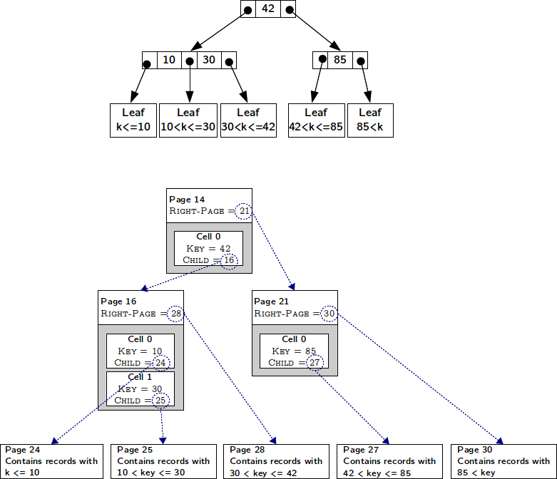
Logical and physical view of a table B-Tree.¶
Datatypes¶
chidb uses a limited number of integer and string datatypes, summarized in the following table. All integer types are big-endian. You must be careful to take this into account when using little-endian machines (such as x86 machines).
All string types use lower ASCII encoding (or, equivalently, 1-byte UTF-8).
Note that these are not the types for the database records (which are described in Database records) but, rather, datatypes used internally in the database file.
Name |
Description |
Range |
|---|---|---|
|
Unsigned 1-byte integer |
\(0 \leq x \leq 255\) |
|
Unsigned 2-byte integer |
\(0 \leq x \leq 65,535\) |
|
Unsigned 4-byte integer |
\(0 \leq x \leq 2^{32}-1\) |
|
Signed 1-byte integer |
\(-128 \leq x \leq 127\) |
|
Signed 2-byte integer |
\(-32768 \leq x \leq 32767\) |
|
Signed 4-byte integer |
\(-2^{31} \leq x \leq 2^{31}-1\) |
|
Unsigned 1-byte varint |
\(0 \leq x \leq 127\) |
|
Unsigned 4-byte varint |
\(0 \leq x \leq 2^{28}-1\) |
|
Nul-terminated string |
# of characters \(\leq\) |
|
Character array |
# of characters \(\leq\) |
varint is a special integer type that is supported for compatibility with
SQLite. A varint is a variable-length integer encoding that can store a 64-bit
signed integer using 1-9 bytes, depending on the value of the integer.
To simplify the chidb file format, this datatype is not fully supported.
However, since the type is essential to the SQLite data format, 1-byte
and 4-byte varint types are supported (which we will refer to as varint8
and varint32, respectively). Note that, in chidb, these are not variable length
integers; they just follow the format of a variable-length integer
encoding in the particular cases when 1 or 4 bytes are used. Thus,
whenever this document specifies that a varint32 is used, that means that exactly
4 bytes (with the format explained below) will be used. There is no need
to determine what the “length” of the integer is.
In a varint8, the most significant bit is always set to 0. The remainder of
the byte is used to store an unsigned 7-bit integer:
0xxxxxxx
In a varint32, the most significant bit of the three most significant bytes is
always set to 1 and the most significant bit of the least
significant byte is always set to 0. The remaining bits are used to
store a big-endian unsigned 28-bit integer:
1xxxxxxx 1xxxxxxx 1xxxxxxx 0xxxxxxx
File header¶
The first 100 bytes of a chidb file contain a header with metadata about the file. This file header uses the same format as SQLite and, since many SQLite features are not supported in chidb, most of the header contains constant values. The layout of the header is shown the following figure.
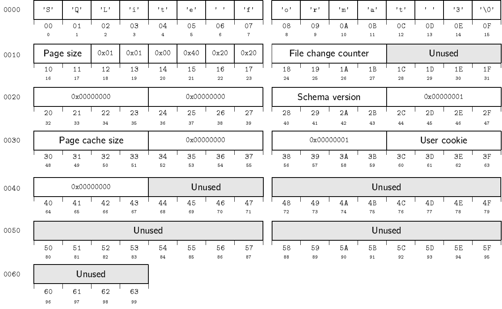
Note that, at this point, all values except \(PageSize\) can be safely ignored, but they must all be properly initialized to the values shown in the following table.
Bytes |
Name |
Type |
Description |
|---|---|---|---|
16-17 |
\(PageSize\) |
|
Size of database page |
24-27 |
\(FileChangeCounter\) |
|
Initialized to |
40-43 |
\(SchemaVersion\) |
|
Initialized to |
48-51 |
\(PageCacheSize\) |
|
Default pager cache size in bytes. Initialized to |
60-43 |
\(UserCookie\) |
|
Available to the user for read-write access. Initialized to |
Furthermore, a chidb file will only be considered valid if it has the same initial values shown in the above table. This means that, when implementing chidb, you do not need to worry about updating \(FileChangeCounter\) and \(SchemaVersion\).
Table pages¶
A table page is composed of four section: the page header, the cells, the cell offset array, and free space.
To understand how they relate to each other, it is important to understand how cells are laid out in a page. A table page is, to put it simply, a container of cells. The bytes in a page of size \(PageSize\) are numbered from 0 to (\(PageSize-1\)). Byte 0 is the top of the page, and byte (\(PageSize-1\)) is the bottom of the page. Cells are stored in a page from the bottom up. For example, if a cell of size \(c_1\) is added to an empty page, that cell would occupy bytes (\(PageSize-c_1\)) through (\(PageSize-1\)). If another cell of size \(c_2\) is added, that cell would occupy bytes (\(PageSize-c_1-c_2\)) through (\(PageSize-c_1-1\)). New cells are always added at the top of the cell area, cells must always be contiguous and there can be no free space between them. Thus, removing a cell or modifying its contents requires instantly defragmenting the cells.
The cell offset array is used to keep track of where each cell is located. The cell offset array is located at the top of the page (after the page header) and grows from the top down. The \(i\)th entry of the array contains the byte offset of the \(i\)th cell by increasing key order. In other words, the cell offset is used not only to determine the location of each cell, but also their correct order.
The following figure shows an example of how the insertion of a new cell affects the cell offset array. Notice how the new cell is stored at the top of the cell area, regardless of its key value. On the other hand, the entry in the cell offset array for the new cell is inserted in order.
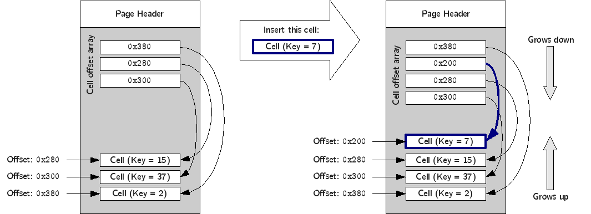
The exact layout of the page is the following:
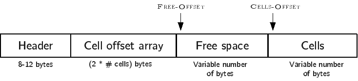
The page header is located at the top of the page, and contains metadata about the page. The exact contents of the page header are explained later.
The cell offset array is located immediately after the header. Each entry is stored as a
uint16. Thus, the length of the cell offset array depends on the number of cells in the page.The cells are located at the end of the page.
The space between the cell offset array and the cells is free space for the cell offset array to grow (down) and the cells to grow (up).
The layout and contents of the page header are summarized in the following figure and table:
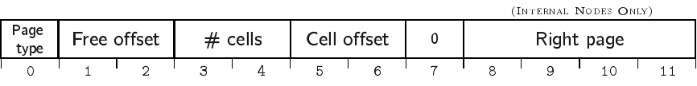
Bytes |
Name |
Type |
Description |
|---|---|---|---|
0 |
\(PageType\) |
|
The type of page. Valid values are |
1-2 |
\(FreeOffset\) |
|
The byte offset at which the free space starts. Note that this must be updated every time the cell offset array grows. |
3-4 |
\(NumCells\) |
|
The number of cells stored in this page. |
5-6 |
\(CellsOffset\) |
|
The byte offset at which the cells start. If the page contains no cells, this field contains the value \(PageSize\). This value must be updated every time a cell is added. |
8-11 |
\(RightPage\) |
|
See Physical organization for a description of this value. |
Table cells¶
The layout and contents of internal table cells is specified in the following figure and table:
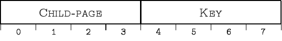
Bytes |
Name |
Type |
Description |
|---|---|---|---|
0-3 |
\(ChildPage\) |
|
|
4-7 |
\(Key\) |
|
The layout and contents of leaf table cells is specified in the following figure and table:
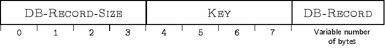
Bytes |
Name |
Type |
Description |
|---|---|---|---|
0-3 |
\(DBRecordSize\) |
|
Length of DB–Record in bytes. |
4-7 |
\(Key\) |
|
|
8-… |
\(DBRecord\) |
See Database records |
Database records¶
A database record is used to store the contents of a single table tuple
(or “row”). It can contain a variable number of values of NULL, integer,
or text types. The record is divided into two parts: the record header
and the record data. The record header specifies the types of the values
contained in the record. However, the header does not include schema
information. In other word, a record header may specify that the record
contains an integer, followed by a string, followed by null value,
followed by an integer, but does not store the names of the fields, as
given when the table was created (this information is stored in the
schema table, described in The schema table). However, values in a
database record must be stored in the same order as specified in the
CREATE TABLE statement used to create the table.
The format of a database record is shown in the following figure.
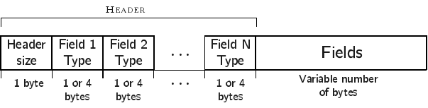
The
header’s first byte is used to store the length in bytes of the header
(including this first byte). This is followed by \(n\) varint8 or
varint32 values, where \(n\) is the number of values stored in the record. The supported
types are listed in the following table. A varint8 is used to specify types
NULL, BYTE, SMALLINT, and INTEGER, while a varint32 is used to
specify a TEXT type.
Header Value |
SQL Type |
Internal type used in record data |
|---|---|---|
0 |
|
N/A |
1 |
|
|
2 |
|
|
4 |
|
|
\(2\cdot\texttt{n}+13\) |
|
|
The record data contains the actual values, in the same order as
specified in the header. Note that a value of type NULL is not
actually stored in the record data (it just has to be specified in the
header). Additionally, the value that corresponds to the table’s primary
key is always stored as a NULL value (since it is already stored as
the key of the B-Tree cell where the record is stored, repeating it in
the record would be redundant). The following figure shows an
example of how a record would be encoded internally, assuming that the table
was created with CREATE TABLE Courses(Id INTEGER PRIMARY KEY, Name TEXT, Instructor INTEGER, Dept INTEGER)
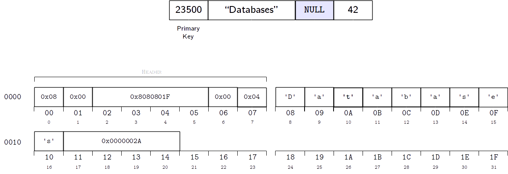
Indexes¶
An index B-Tree is very similar to a table B-Tree, so most of what we have explained regading table B-Trees is applicable to indexes. The main differences are the following:
The \(PageType\) field of the page header must be set to the appropriate value (
0x02for internal pages and0x0Afor leaf pages)While a table is stored as a B+-Tree (records are only stored in the leaf nodes), an index is stored as a B-Tree (records are stored at all levels). However, an index does not store database records but, rather, \(\langle KeyIdx, KeyPk \rangle\) pairs, as defined in Physical organization.
The layout and contents of internal index cells is specified in the following figure and table:
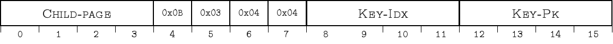
Bytes |
Name |
Type |
Description |
|---|---|---|---|
0-3 |
\(ChildPage\) |
|
|
8-11 |
\(KeyIdx\) |
|
|
12-15 |
\(KeyPk\) |
|
The layout and contents of leaf index cells is specified in the following figure and table:
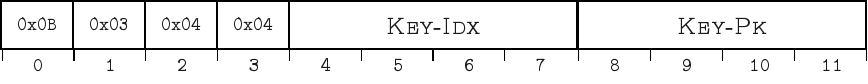
Bytes |
Name |
Type |
Description |
|---|---|---|---|
4-7 |
\(KeyIdx\) |
|
|
8-11 |
\(KeyPk\) |
|
Notice how the internal and leaf cells only differ in the \(ChildPage\) field.
The schema table¶
Up to this point, this document has covered how to store one or more tables and indexes in a chidb file. However, there is no way of knowing how many tables/indexes are stored in the file, what their schema is, and how the indexes relate to the tables. This information is stored in a special schema table. More specifically, a chidb file will always contain at least one table B-Tree, rooted in page 1, which will be used to store information on the database schema. The schema table contains one record for each table and index in the database. The following table lists the values that must be stored in each record.
Type |
Name |
Description |
|---|---|---|
|
Schema item type |
|
|
Schema item name |
Name of the table or index as specified in the |
|
Associated table name |
For tables, this field is the same as the schema item name (the name of the table). For indexes, this value contains the name of the indexed table. |
|
Root page |
Database page where the root node of the B-Tree is stored. |
|
SQL statement |
The SQL statement used to create the table or index. |
For example, a schema table could contain the following records:
Type |
Name |
Assoc. Table |
Root Page |
SQL |
|---|---|---|---|---|
table |
Courses |
Courses |
2 |
|
table |
Instructors |
Instructors |
3 |
|
index |
idxInstr |
Courses |
6 |
|